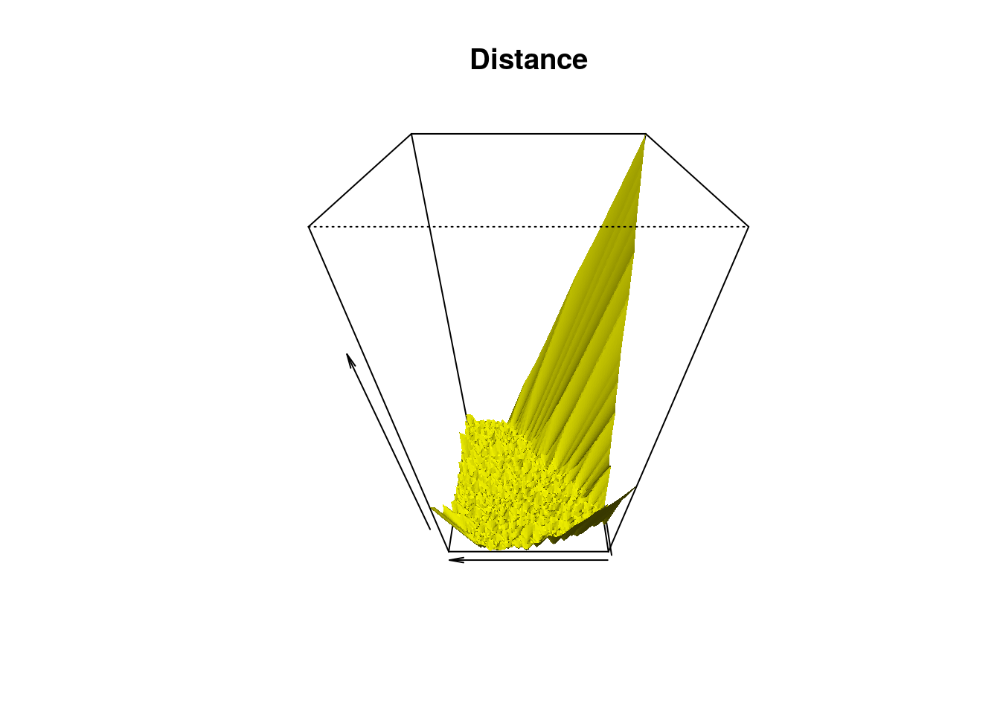
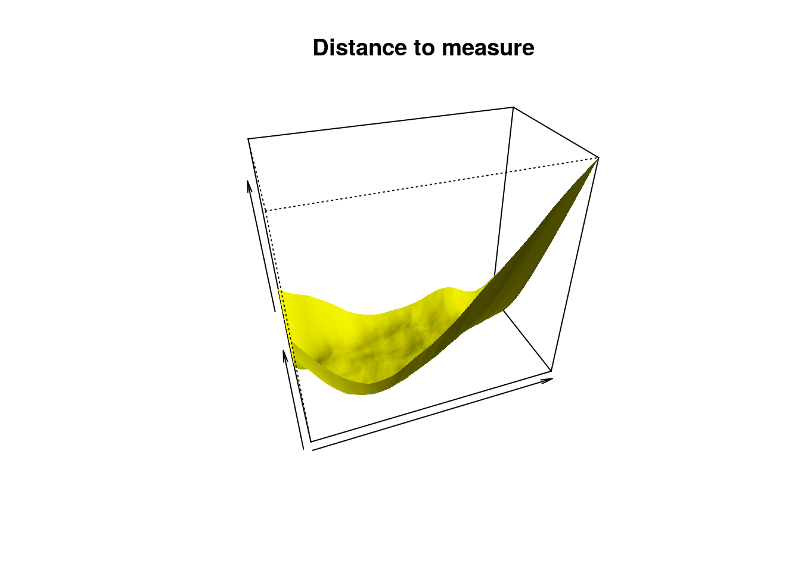
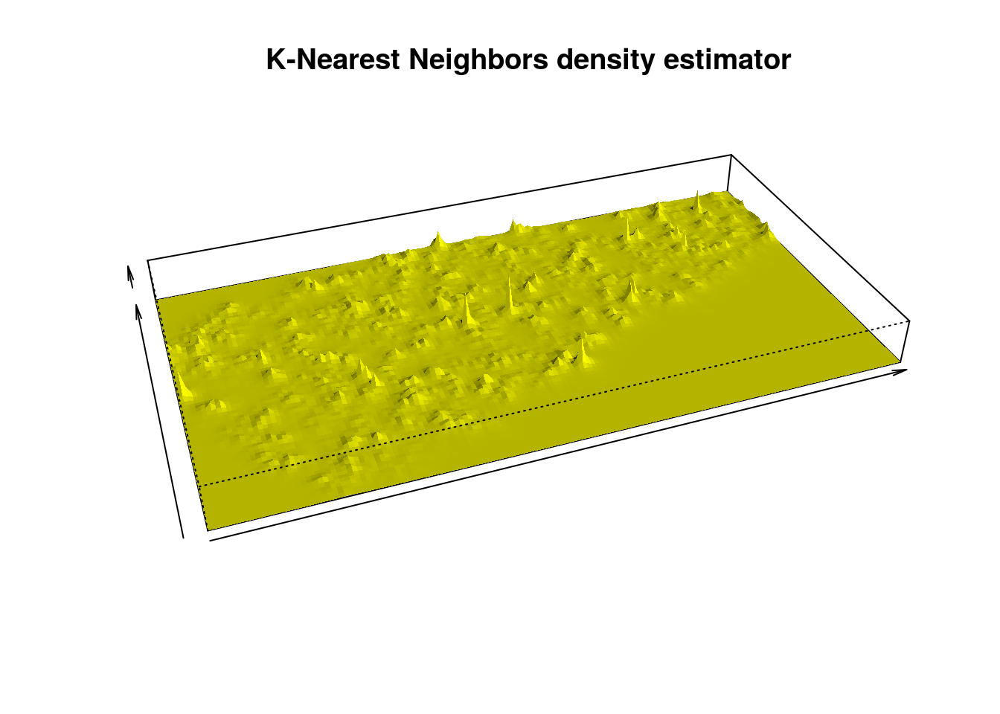
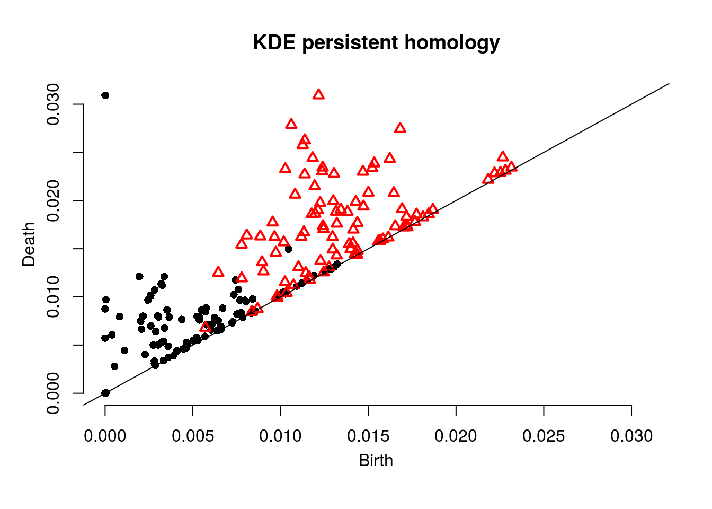
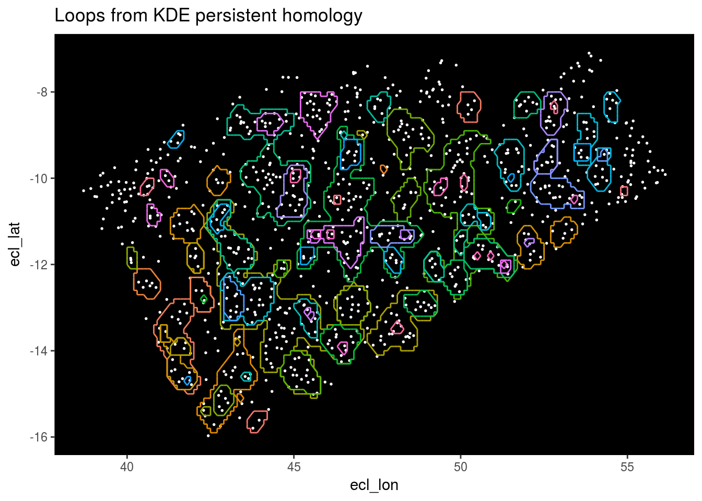
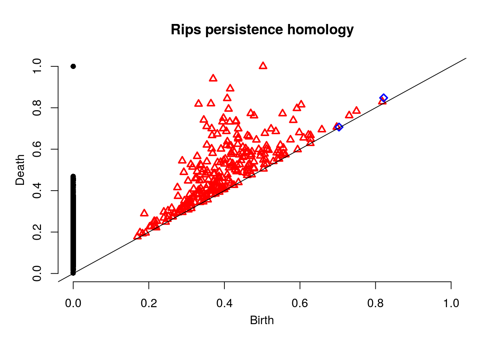
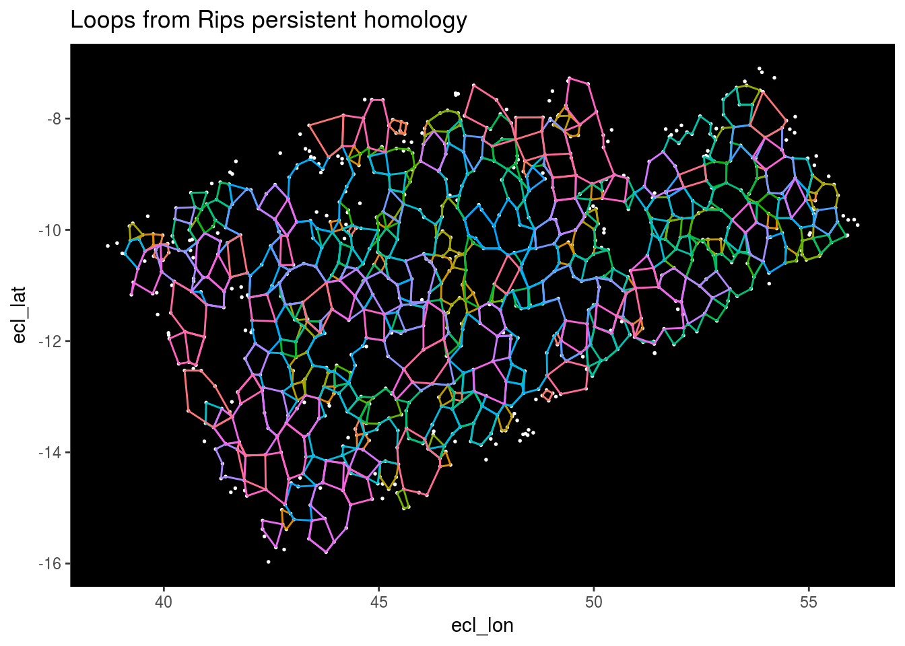
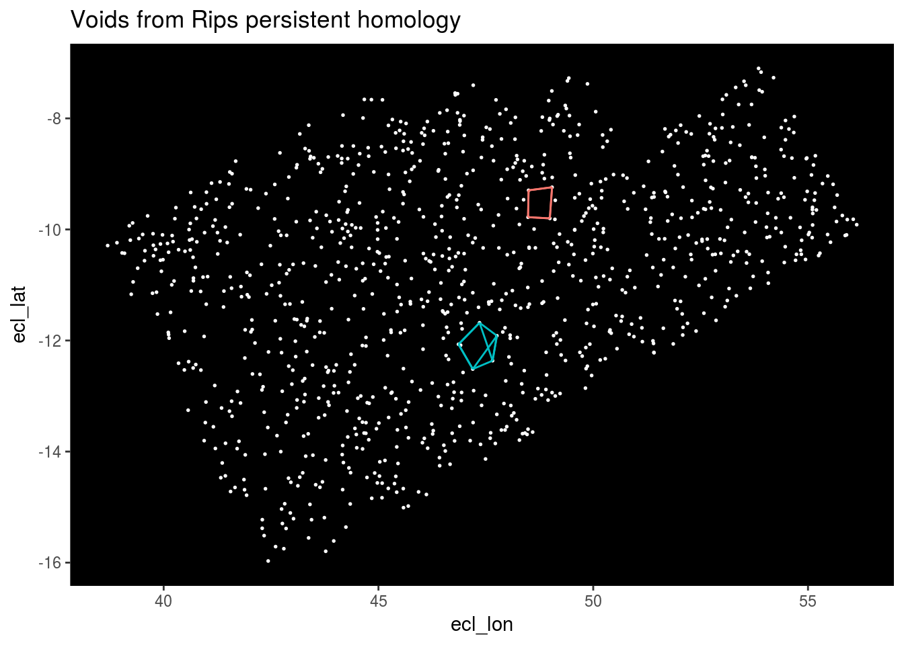

For this project, we’ll apply topological data analysis using the TDA package to a set of star data obtained by the Gaia space telescope. The data can be found here. We’ll just focus on the stars locations and take a random sample of 1000 stars.
set.seed(7)
Stars <- read_csv("GaiaSource_000-000-000.csv") %>% select(ecl_lon, ecl_lat) %>% sample_n(1000)First we’ll look at density estimators. To use these functions, first we have to create a grid.
Xlim <- c(40, 55)
Ylim <- c(-16, -8)
by <- 0.1
Xseq <- seq(from = Xlim[1], to = Xlim[2], by = by)
Yseq <- seq(from = Ylim[1], to = Ylim[2], by = by)
Grid <- expand.grid(Xseq, Yseq)Here is the surface where (x,y) is the grid and z is the distance to closest star.
distance <- distFct(X = Stars, Grid = Grid)
persp(x = Xseq, y = Yseq,
z = matrix(distance, nrow = length(Xseq), ncol = length(Yseq)),
xlab = "", ylab = "", zlab = "", theta = -90, phi = 45, scale = TRUE,
expand = 2, col = "yellow", border = NA, ltheta = -60, lphi = 45, shade = 1,
main = "Distance")
Next a surface where z is a “distance to measure function” which is the uniform empirical measure.
m0 <- 0.1
DTM <- dtm(X = Stars, Grid = Grid, m0 = m0)
persp(x = Xseq, y = Yseq,
z = matrix(DTM, nrow = length(Xseq), ncol = length(Yseq)),
xlab = "", ylab = "", zlab = "", theta = -20, phi = 35, scale = FALSE,
expand = 3, col = "yellow", border = NA, ltheta = 50, shade = 0.5,
main = "Distance to measure")
Here z is a K-Nearest Neighbors Density Estimator.
k <- 3
kNN <- knnDE(X = Stars, Grid = Grid, k = k)
persp(x = Xseq, y = Yseq,
z = matrix(kNN, nrow = length(Xseq), ncol = length(Yseq)),
xlab = "", ylab = "", zlab = "", theta = -20, phi = 35, scale = FALSE,
expand = 3, col = "yellow", border = NA, ltheta = 50, shade = 0.5,
main = "K-Nearest Neighbors density estimator")
Now we’ll look a persistent homology. First we’ll create this function to extract out feature information and store it in a data frame.
get_features <- function(d) {
Top_features <- as.data.frame(matrix(vector(), 0, 5))
names(Top_features) <- c("X1", "Y1", "X2", "Y2", "Component")
one <- which(Diag[["diagram"]][, 1] == d)
for (i in seq(along = one)) {
for (j in seq_len(dim(Diag[["cycleLocation"]][[one[i]]])[1])) {
Top_features <- Top_features %>% add_row(X1 = Diag[["cycleLocation"]][[one[i]]][j, 1, 1],
Y1 = Diag[["cycleLocation"]][[one[i]]][j, 1, 2],
X2 = Diag[["cycleLocation"]][[one[i]]][j, 2, 1],
Y2 = Diag[["cycleLocation"]][[one[i]]][j, 2, 2],
Component = i)
}
}
Top_features
}First we’ll compute the homology using our grid and a kernel density estimator.
Diag <- gridDiag(Stars, maxdimension = 2, FUN = kde, library = "Dionysus", lim = cbind(Xlim, Ylim), by = by,
sublevel = TRUE, location = TRUE, printProgress = FALSE, h = 0.2)Next we plot the homology. Note each dot represents a 0-dimensional feature (component) and each red triangle represents a 1-dimensional feature (loop).
plot(Diag$diagram, main="KDE persistent homology")
Next we’ll plot the loops the algorithm has detected.
Top_features <- get_features(1)
Stars %>% ggplot(aes(x = ecl_lon, y = ecl_lat)) + geom_point(color = "white", size = 0.3) +
geom_segment(data = Top_features, aes(x = X1, y = Y1, xend = X2, yend = Y2, color = as.factor(Component))) +
theme(panel.background = element_rect(fill = "black"), panel.grid.major = element_blank(), panel.grid.minor = element_blank(), legend.position="none") +
ggtitle("Loops from KDE persistent homology")
Next we’ll compute the Rips persistent homology.
Diag <- ripsDiag(Stars, maxdimension = 2, maxscale = 1, library = "Dionysus",
location = TRUE, printProgress = FALSE)
plot(Diag$diagram, main = "Rips persistence homology")
Note the blue squares are 2-dimensional features (voids).
Top_features <- get_features(1)
Stars %>% ggplot(aes(x = ecl_lon, y = ecl_lat)) + geom_point(color = "white", size = 0.3) +
geom_segment(data = Top_features, aes(x = X1, y = Y1, xend = X2, yend = Y2, color = as.factor(Component))) +
theme(panel.background = element_rect(fill = "black"), panel.grid.major = element_blank(), panel.grid.minor = element_blank(), legend.position="none") +
ggtitle("Loops from Rips persistent homology")
Finally we’ll plot the voids.
Top_features <- get_features(2)
Stars %>% ggplot(aes(x = ecl_lon, y = ecl_lat)) + geom_point(color = "white", size = 0.3) +
geom_segment(data = Top_features, aes(x = X1, y = Y1, xend = X2, yend = Y2, color = as.factor(Component))) +
theme(panel.background = element_rect(fill = "black"), panel.grid.major = element_blank(), panel.grid.minor = element_blank(), legend.position="none") +
ggtitle("Voids from Rips persistent homology")